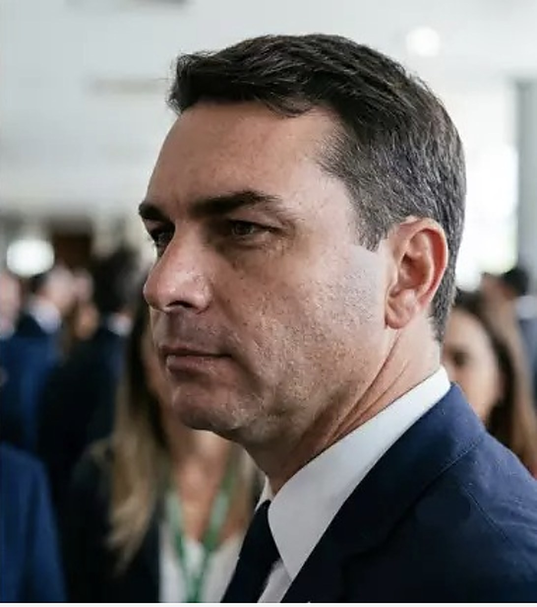

Eleição presidencial 2026 · 2º turno– visitas– compartilhamentos2º turno em 25 de outubro
Lula × Flávio Bolsonaro: comparativo do 2º turno de 2026
PT · vice Geraldo AlckminLula45,16%53.876.617 votos no 1º turno
×

PL · vice Alfredo GasparFlávio47,03%56.104.268 votos no 1º turno
outros 7,81%
1º turno · % dos votos válidos · 99,99% das urnas · TSEAtualizado em 12/10/2026
Propostas, efeitos, viabilidade, trajetórias e indicadores dos dois candidatos, lado a lado. Cada informação traz o número da fonte; toque nele para abrir.
Lula venceuFlávio venceu% dos válidos do vencedor no estado
Flávio ficou cerca de 2,2 milhões de votos à frente, com 99,99% das urnas apuradas. Brancos: 1,84% e nulos: 2,93% do total. O 2º turno é em 25/10. 97140134
Onde cada um venceu no 1º turno
Lula
Venceu em 12 estados: os 9 do Nordeste, mais Pará, Amazonas e Amapá. 205206
Maiores votações: Piauí (70,99%), Bahia (66,17%) e Maranhão (63,99%). 205
Flávio Bolsonaro
Venceu em 14 estados e no DF: todo o Sul, Sudeste e Centro-Oeste, mais Acre, Rondônia, Roraima e Tocantins. 205206
Maiores votações: Roraima (71,06%), Rondônia (67,45%) e Santa Catarina (66,65%). 205
Apoios declarados para o 2º turno (até 11/10)
Lula
PCB e PSTU (7/10): "voto crítico" em Lula contra a volta dos Bolsonaro, sem apoio a um eventual governo. 285
Unidade Popular (11/10), sem integrar formalmente a campanha. 286
Até 11/10, não havia registro de apoio de partidos de centro ou de direita a Lula nas fontes consultadas. 287
Flávio Bolsonaro
PP e União Brasil (6/10), que antes estavam neutros. 207
Republicanos (7/10), Novo, Podemos e 17 diretórios estaduais do MDB. 208287
Ex-candidatos Augusto Cury (Avante, 3º colocado, em 8/10), Ronaldo Caiado (PSD), Romeu Zema (Novo) e Clariana Barão (DC). 287208209210
Renan Santos (Missão) descartou apoiar Lula ou Flávio. Apoio de partido ou candidato não transfere votos automaticamente. 208286
AtlasIntel (3 a 8/10): 52,8% dos válidos. 288292293
Datafolha: 2.520 entrevistas presenciais, margem de 2 pontos, registro BR-02949/2026. PoderData: margem de 1,8 ponto, registro BR-08134/2026. AtlasIntel (contratada pela Bloomberg): 5.026 entrevistas online, margem de 1 ponto, registro BR-03663/2026; no total de votos, 51,1% a 45,7%. "Válidos" exclui brancos, nulos e indecisos. Pesquisa é retrato do momento, não previsão. 212213288292293
Debates do 2º turno
11/10Record · cancelado em 9/10, por conflito de agendas
18/10, 20hBand, com Estadão, Cultura, Gazeta e Jovem Pan
23/10Globo (horário não divulgado)
Os dois disseram que querem participar de debates no 2º turno; não houve debates entre eles no 1º turno. 214215289
Como ler
Etiquetas e cuidados
Plano TSEEstá no plano entregue ao TSE.
Fala públicaDito em entrevista ou evento; não está no plano.
Depende do CongressoPrecisa de PEC, lei ou maioria no Congresso.
ContinuidadeMantém ou amplia política que já existe.
Lei aprovadaLei ou emenda aprovada.
Interpretação de fonteAvaliação de analistas ou entidades, não fato oficial.
InvestigaçãoInvestigação em curso, sem condenação.
Decisão processualAnulação, rejeição ou prescrição: não é absolvição de mérito.
Fontes: os números pequenos ao lado do texto abrem a fonte de cada informação. As opiniões são atribuídas a quem as disse; a página não indica qual lado tem razão.
Data: base de dados de 8/10/2026, com disputa, pesquisas, apoios, debates, votação da 6x1 e escândalos atualizados até 11/10/2026. Esses itens mudam rápido; confira a fonte antes de compartilhar.
Planos: estar registrado no TSE prova que o plano foi apresentado. O TSE não avalia custo, viabilidade nem aprovação das medidas. 66
Leis: sanção ou promulgação não é o mesmo que execução, e várias medidas nasceram no Congresso, não no Executivo, como o Auxílio Emergencial e o Marco das Startups. 128
Plano 2027–2030
Propostas por tema
Tudo o que está nos planos, tema por tema. Os itens marcados com "ver análise" são detalhados na seção seguinte. Segundo as reportagens consultadas, nenhum dos planos trata de aborto ou de política de drogas. 223224
Plano de governo registrado
Lula
Plano TSE
Diretrizes para o Programa de Transformação do Brasil: 13 diretrizes. 6768
Novo plano protocolado pela Executiva Nacional do PT em 8/8/2026. 68
Flávio Bolsonaro
Plano TSE
Para o Brasil Vencer o Atraso (2027–2030): 76 páginas e 11 capítulos. 7879
A Agência Brasil o resumiu em nove eixos (diferença só de organização). 81
Economia e tributos
Lula
Plano TSEContinuidade
Manter o arcabouço fiscal e controlar o crescimento da despesa. 69ver análise ↓
Justiça tributária e progressividade na implementação da reforma tributária. 69
Isenção de IR até R$ 5 mil aparece como medida já feita, não como promessa nova. 6970ver análise ↓
Em fala na SBPC (28/7), citou recursos para ciência "por fora" do arcabouço, mas disse que não o desrespeitaria. 74
Flávio Bolsonaro
Plano TSEFala pública
"Tesouraço": cortar ao menos 10 ministérios, cargos e despesas; combater supersalários. 8182ver análise ↓
Retomar desestatizações, fortalecer a Lei das Estatais; Caixa como "Banco da Prosperidade". 81ver análise ↓
Redimensionar a reforma tributária e reduzir o IVA (sem alíquota no plano). 8182ver análise ↓
Em fala na CNI (22/6), citou IVA de 20% e R$ 190 bi em cortes — números que não estão no plano. 83
Trabalho e jornada
Lula
Plano TSEDepende do Congresso
Atuar pelo fim da escala 6x1 e jornada de 40 horas sem redução de salário. 69ver análise ↓
Proteção a trabalhadores de aplicativos, transparência de algoritmos e combate à "pejotização" fraudulenta. 69
Plataforma pública de empregabilidade com IA no Sine. 69
Flávio Bolsonaro
Plano TSEFala pública
Contratos de menor custo para jovens de 18–24 anos (1º emprego) e pessoas 50+ desempregadas há 12 meses. 83ver análise ↓
Negociado sobre o legislado, jornadas flexíveis, banco nacional de vagas. 83ver análise ↓
O plano não menciona o fim da 6x1; em falas, criticou a redução sem corte salarial e defendeu salário por hora. 738486
Proteção social, Previdência e idosos
Lula
Plano TSEContinuidade
Manter, aperfeiçoar e ampliar o Bolsa Família (sem novo valor definido). 6871
Ampliar Minha Casa, Minha Vida, priorizando os mais pobres. 71
Política Nacional de Cuidados: Cuidotecas, lavanderias públicas, cozinhas solidárias. 71
Manter cotas e ações afirmativas; fortalecer PAA e agricultura familiar. 6871
Manter a valorização real do salário mínimo, com efeito em aposentadorias e BPC. 223226ver análise ↓
Contribuição previdenciária mais flexível para quem alterna emprego e informalidade, incluindo trabalhadores de aplicativos. 226
Para idosos: Centros-Dia, atendimento domiciliar e mais vagas em instituições de longa permanência. 226
Flávio Bolsonaro
Plano TSEFala pública
Manter programas assistenciais, combater fraudes e usá-los como ponte para emprego. 8188
Casa Verde e Amarela com meta de 2,5 milhões de moradias; Lixão Zero. 8182
Um valor-meta e uma diretriz de "ampliar" não são comparáveis sem orçamento, prazo e fonte de recursos.
Instituições e tecnologia
Lula
Plano TSE
Participação social, PPA 2028–2031 participativo, transparência com dados abertos. 77
Regulação de redes contra desinformação, preservando a liberdade de expressão. 77ver análise ↓
Soberania digital: datacenters nacionais, modelos de IA em português, fibra e 5G. 77
Flávio Bolsonaro
Plano TSEDepende do Congresso
Limitar decisões monocráticas e tirar competências criminais do STF. 8588ver análise ↓
Fim da reeleição presidencial; "Tesouraço na Censura". 8588ver análise ↓
100% dos serviços federais digitais, Gov.br, IA "ClarIA" e IA para pequenas empresas. 88
Em 7/10, ligou as mudanças constitucionais à obtenção de maioria no Congresso. 85
Política externa
Lula
Plano TSEContinuidade
Política externa "universalista", com a soberania como eixo do programa. 223
Aprofundar BRICS e Sul Global, fortalecer o Mercosul, reformar ONU, OMC, FMI e Banco Mundial. 223
Responder a tarifaços dos EUA com base em regras internacionais; mercado comum de energia na América do Sul. 223
Flávio Bolsonaro
Plano TSE
Reaproximar o Brasil de EUA, Argentina e Israel. 224225
Negociar com China, União Europeia e EUA "conforme o interesse brasileiro", sem afinidade ideológica. 224
Retomar a adesão à OCDE e buscar saída diplomática para sanções comerciais. 224225
Segundo o SBT News, o plano não menciona o Mercosul. 225
Na prática
Propostas de maior impacto
Para cada uma: quem ganha e quem paga, o que precisa ser aprovado, se esbarra na Constituição ou em decisão do STF, e os principais argumentos dos dois lados. Uma PEC exige 308 dos 513 deputados e 49 dos 81 senadores, em dois turnos; uma lei complementar, 257 deputados e 41 senadores; uma lei ordinária, maioria simples dos presentes. 204
Câmara eleita: cadeiras por partido
PL121
PT70
União46
PSD43
PP41
Republicanos41
MDB36
Podemos27
PSB15
PSOL14
PCdoB11
PSDB11
Novo10
7 outros27
PL (de Flávio) e PT (de Lula) em destaque. "7 outros" são PV 7, PDT 6, Avante 5, PRD 5, Solidariedade 2, Rede 1 e Missão 1. Federações: Brasil da Esperança (PT, PCdoB, PV) soma 88; União Progressista (União, PP), 87. 201202203
Senado: maiores bancadas
28PL
11União Progressista
9PT
8MDB
Soma eleitos em 2026 e senadores com mandato em curso; as demais bancadas variam entre veículos. Nenhum partido terá maioria sozinho. 202203
Trabalho
Lula
Fim da escala 6x1 e jornada de 40 horas
PEC
PEC 221/2019: aprovada na Câmara em maio/2026 e na CCJ do Senado em 2/9/2026. Em outubro entrou em discussão no plenário do Senado, com o 1º turno de votação marcado para 14/10; precisa de 49 votos em dois turnos. Prevê 42h após 60 dias da promulgação e 40h depois. 228229290291
Quem ganhaTrabalhadores com carteira: dois dias de folga por semana e menos horas, sem corte de salário. 229
Quem pagaEmpresas: o Ipea estima custo extra médio de 7,8% com mão de obra (cerca de 1% do custo total no comércio e na indústria); a CNC estima +21% na folha. Microempresas podem precisar de apoio na transição. 230
Argumento a favorO Ipea diz que perdas de PIB e de emprego não têm respaldo na história do país. 230
Argumento contraA CNI projeta −0,7% no PIB e preços 6,2% mais altos, em média. 228230
Flávio Bolsonaro
Contratos de menor custo para jovens e pessoas 50+
Lei ordinária
Exige lei. Precedente: o Contrato Verde e Amarelo (MP 905/2019), para jovens de 18 a 29 anos, caducou no Senado em agosto de 2020. 83231
Quem ganhaEmpresas: pagam menos para contratar jovens de 18–24 anos e pessoas 50+ desempregadas há 12 meses. 83
Quem pagaTrabalhadores contratados: no precedente de 2019, o modelo reduzia FGTS e multa rescisória. 231
Argumento a favorO plano argumenta que isso amplia o primeiro emprego e a recolocação de quem tem 50+. 83
Argumento contraO DIEESE diz que estudos sobre desoneração da folha encontraram efeito pequeno ou nulo no emprego. 231
Jornada por hora e "negociado sobre o legislado"
Lei ordináriaPEC
Ampliar o negociado sobre o legislado exige lei; mexer na jornada máxima de 44h, fixada na Constituição, exige PEC. 41 senadores de oposição assinaram uma PEC alternativa de regime por hora. 228204
Argumento a favorDefensores dizem que dá ao trabalhador liberdade para ajustar a jornada à vida pessoal. 228
Argumento contraCríticos dizem que o trabalhador tem pouco poder de negociação diante do empregador. 228
Impostos, renda e contas públicas
Lula
Isenção de IR até R$ 5 mil
Já em vigor
Lei 15.270/2025, em vigor desde 2026, com desconto decrescente até R$ 7.350. O plano a apresenta como medida já feita. 15469
Quem ganhaQuem ganha até R$ 5 mil por mês deixa de pagar imposto de renda. 154
Quem pagaA compensação vem da tributação mínima de altas rendas, que pode atingir sócios e donos de empresa de renda alta. 154
Valorização real do salário mínimo
Já em vigor
Lei sancionada em dez/2024 limita o ganho real a entre 0,6% e 2,5% ao ano até 2030. Ampliar além disso exigiria nova lei. 233
Quem ganhaTrabalhadores, aposentados e quem recebe BPC: reajuste acima da inflação. 226233
Quem pagaCofres públicos: cada R$ 1 de aumento eleva a despesa em cerca de R$ 392 milhões, sobretudo na Previdência. 233
Manter o arcabouço fiscal
Já em vigor
Regra criada pela LC 200/2023, já em vigor. Mudar a regra exigiria nova lei complementar. 145
Argumento a favorO governo cumpriu a meta de 2025 dentro da margem de tolerância (déficit de R$ 9,5 bi, 0,1% do PIB). 232
Argumento contraA IFI, órgão do Senado, vê quadro frágil: a dívida bruta subiu 7,3 pontos do PIB de dez/2022 a nov/2025, 8,2% da despesa ficou fora das regras e um ajuste seria necessário a partir de 2027. 232
Flávio Bolsonaro
Rever a reforma tributária e reduzir o IVA
PECLei complementar
A reforma está na EC 132/2023 e na LC 214/2025. Mudar alíquotas e regimes exige lei complementar; especialistas apontam que reestruturar exigiria PEC antes da CBS plena em 2027. A equipe de Flávio descartou suspender a reforma em 14/9. 146147235236
Quem ganhaSetores hoje com alíquota cheia, como serviços, pagariam menos. Menos imposto sobre energia e combustíveis beneficia empresas e consumidores. 23523681
Quem pagaConsumidores: itens da cesta básica e remédios, hoje com alíquota menor, podem ficar mais caros. 235
Obstáculo jurídicoA alíquota de referência estimada é 27,91%, acima do teto legal de 26,5%. Para chegar a 20% sem perder arrecadação seria preciso cortar regimes diferenciados. 234235
Argumento a favorA equipe de Flávio e parte dos tributaristas dizem que o excesso de exceções elevou a alíquota padrão. 235236
Argumento contraEspecialistas dizem que a mudança enfrentaria forte resistência dos setores com regime especial. 235
Cortar ao menos 10 ministérios ("Tesouraço")
Lei ordinária
A estrutura dos ministérios é definida em lei (hoje a Lei 14.600/2023). Pode ser alterada por lei ou por medida provisória, que depois o Congresso precisa aprovar. 256
Quem pagaServidores do topo: corte de cargos e de supersalários. 81
Segurança e Justiça
Lula
Criar o Ministério da Segurança Pública
PEC
O plano condiciona o ministério à PEC 18/2025, aprovada na Câmara e com texto-base aprovado na CCJ do Senado em 2/9/2026; o plenário estava previsto para outubro. A PEC constitucionaliza o SUSP e amplia a atuação da PRF. 72237
Argumento a favorAnalistas do Instituto Sou da Paz e do Ibmec dizem que a PEC não reduz a autonomia dos estados e permite integrar dados. 238
Argumento contraOs governadores Tarcísio de Freitas e Ronaldo Caiado criticaram a centralização da segurança na União. 238
Lei Antifacção (já sancionada)
Já em vigor
Lei 15.358/2026: facção criminosa com pena de 20 a 40 anos, sem anistia, indulto ou fiança para líderes e até 85% da pena em regime fechado em alguns casos. Lula vetou dois trechos. 243
Flávio Bolsonaro
Reduzir a maioridade penal para 16 anos
PEC
Exige PEC (art. 228 da Constituição). A PEC de Flávio (32/2019) está parada na CCJ do Senado; outra PEC tramitava na CCJ da Câmara em 2026. 118239240
Obstáculo jurídicoJuristas divergem se o art. 228 é cláusula pétrea; se aprovada, a palavra final tende a ficar com o STF. 239241
Argumento a favorO relator na Câmara argumenta que jovens de 16 anos entendem seus atos e cita cerca de 90% de apoio em pesquisas. 240
Argumento contraA deputada Maria do Rosário cita reincidência de cerca de 70% no sistema prisional, contra 20% no socioeducativo. 240
Fim da progressão de regime para crimes hediondos
Lei ordinária
Formalmente exige lei, mas em 2006 o STF (HC 82.959) declarou inconstitucional a proibição total de progressão, por ferir a individualização da pena. 242
Obstáculo jurídicoUma nova proibição total tende a ser questionada no STF. A Lei Antifacção de 2026 já endureceu a progressão em alguns casos. 242243
Castração química para condenados por estupro
Lei ordinária
Exige lei. Projetos anteriores foram rejeitados na CCJ da Câmara e do Senado. 244
Obstáculo jurídicoA Constituição proíbe penas cruéis (art. 5º, XLVII), regra tratada como cláusula pétrea; parte da comunidade jurídica vê a medida como inconstitucional. 244
Argumento a favorDefensores dizem que um modelo voluntário, como condição para benefícios, não seria intervenção forçada. 244
Argumento contraCríticos dizem que o consentimento sob ameaça de perder benefícios não é livre e que não há prova conclusiva de eficácia. 244
Classificar facções como narcoterroristas
Lei ordinária
Exige mudar a Lei Antiterrorismo (13.260/2016), como propõe o PL 1.283/2025, que tramitava na Câmara. 245257
Argumento a favorO autor do projeto diz que facções impõem controle territorial e terror; a mudança levaria investigações à PF e permitiria bloquear bens com apoio estrangeiro. 245257
Argumento contraO governo diz que terrorismo pressupõe motivação política ou ideológica e que a classificação abriria brecha para intervenção de outros países. 245246
Instituições
Lula
Regular as redes sociais
Lei ordinária
Exige lei; o PL 2.630/2020 não avançou. Em 26/6/2025 o STF, por 8 a 3, já ampliou a responsabilidade das plataformas ao rever o art. 19 do Marco Civil. 247248
Argumento a favorO então presidente do STF, Luís Roberto Barroso, disse que a Corte agiu por falta de lei; uma lei daria regras definidas pelo Congresso. 247
Argumento contraO presidente do Google Brasil alertou que mudança ampla pode levar a mais remoção de conteúdo; artigo no Migalhas critica regras criadas pelo STF sem processo legislativo. 247248
Flávio Bolsonaro
Fim da reeleição para presidente
PEC
Flávio protocolou PEC em 3/2026 que valeria para o eleito em 2026. Outra PEC (12/2022) foi aprovada na CCJ do Senado em 2025 e está parada desde então. 249250
Argumento a favorA justificativa da PEC diz que a reeleição prejudica a alternância de poder e cria campanha permanente. 249
Argumento contraDefensores da reeleição dizem que ela permite concluir projetos de longo prazo; Datafolha citado em editorial mostrou 58% a favor de mantê-la. 251
Limitar decisões individuais de ministros do STF
PEC
A PEC 8/2021 já passou pelo Senado e pela CCJ da Câmara (39 a 18, em 10/2024) e aguarda comissão especial. Retirar competências criminais do STF também exige PEC. 252204
Argumento a favorJuristas ouvidos no Senado viram a proposta como pertinente e constitucional, com ressalvas sobre prazos curtos. 253
Argumento contraNa CCJ, PT, PSB, PDT e PSOL votaram contra; a imprensa registrou a votação no contexto de embates entre Congresso e STF. 252
Educação e Estado
Lula
Fortalecer o Pé-de-Meia
Ato do governoLei ordinária
Criado pela Lei 14.818/2024; ampliar exige dotação no Orçamento. 150
Obstáculo jurídicoEm fev/2025 o TCU liberou os pagamentos, mas deu 120 dias para o governo incluir o programa no Orçamento, após questionar o uso de fundo privado. 254
Flávio Bolsonaro
Voucher onde faltar vaga na escola pública
Lei ordinária
A Constituição já permite bolsas em escola privada para alunos sem recursos quando faltam vagas na rede pública da localidade (art. 213, §1º); ampliar depende de lei e de orçamento. 204
Retomar privatizações e ampliar concessões
Lei ordinária
O programa de desestatização segue a Lei 9.491/1997. Em 2019 o STF decidiu que vender o controle da empresa-mãe exige lei específica e licitação; subsidiárias, não. 255
Quem ganhaEmpresas: mais privatizações, concessões e PPPs, com R$ 900 bi previstos em infraestrutura em quatro anos. 8182
Eleito presidente em 2002 e reeleito em 2006 (mandatos 2003–2010). 91
Eleito em 2022 com 50,83% dos válidos; 3º mandato desde 2023. 9589
Flávio Bolsonaro
2016: 4º lugar para prefeito do Rio (PSC), com 14% dos votos. 116
2018: senador pelo RJ (PSL), cerca de 4,37 milhões de votos (31,3%). 115116
Em 2025, eleito presidente da Comissão de Segurança Pública do Senado. 114
Atuação legislativa e de governo
Lula
Interpretação de fonte
Governos 2003–2010: Fome Zero, Bolsa Família, valorização real do salário mínimo, resposta à crise de 2008. 98
Acadêmicos divergem na leitura desse período (ex.: "neodesenvolvimentismo"). São interpretações. 9899
Flávio Bolsonaro
Interpretação de fonte
Contagens variam: a Folha não achou projeto de autoria própria virado lei até maio/2026; duas leis em coautoria. 121
Relator do projeto que restringiu a "saidinha" (Lei 14.843/2024). 119120
Na Alerj, segurança foi o tema dominante em 68% dos discursos (levantamento independente). 123
De 2020 a 2026, indicou R$ 271 milhões em emendas empenhadas, concentradas em segurança. Empenho não é pagamento. 121
Análise da PUC-SP: relação mais próxima com o Centrão do que o governo Jair no início, e posição contrária à pena de morte. 87
Bens declarados ao TSE
Lula
R$ 4,78 milhões, em grande parte em planos de previdência privada. 216
Em 2022, havia declarado cerca de R$ 7,4 milhões. 216
Flávio Bolsonaro
R$ 8,19 milhões; o principal bem é uma casa em Brasília. 216217
Em 2018, declarou cerca de R$ 1,74 milhão: alta real de 211% (corrigida pelo IPCA). 217
Valores declarados ao TSE nem sempre refletem preço de mercado. 216
Arrecadação de campanha (até 8/9/2026)
Lula
R$ 35,9 milhões, dos quais R$ 35 milhões repassados pelo PT do fundo eleitoral. 218
Flávio Bolsonaro
R$ 44,3 milhões, dos quais R$ 42 milhões repassados pelo PL do fundo eleitoral. 218
Maiores doações individuais: R$ 500 mil (duas) e R$ 400 mil. 218
Dado parcial. O teto de gastos é R$ 88,9 milhões no 1º turno e R$ 44,5 milhões no 2º. A prestação de contas final vence em 14/11. 218219
Histórico
O que os governos de referência entregaram
Compara o governo Lula III (2023–2026) com o de Jair Bolsonaro (2019–2022). Flávio não chefiou esse governo: era senador. Ele aparece aqui porque o plano dele declara continuidade de políticas daquele período (Pix, Gov.br, Liberdade Econômica, Marco do Saneamento). 8087
Principais leis e reformas
Lula
Lei aprovada
Regime Fiscal Sustentável (LC 200/2023), no lugar do teto de gastos. 145
Reforma tributária do consumo (EC 132/2023, promulgada pelo Congresso). 146147
Volta do Bolsa Família (Lei 14.601/2023) e do Minha Casa, Minha Vida (Lei 14.620/2023). 148149
Pé-de-Meia (2024), igualdade salarial (2023), novo ensino médio (2024). 150151152
Licenciamento ambiental (Lei 15.190/2025, controversa) e isenção de IR até R$ 5 mil (efeito em 2026). 153154
Flávio Bolsonaro
Lei aprovada
Reforma da Previdência (EC 103/2019, promulgada pelo Congresso). 13
Liberdade Econômica (Lei 13.874/2019), autonomia do Banco Central (LC 179/2021), Marco das Startups. 468
Pacote anticrime (2019), Marco do Saneamento (2020), privatização da Eletrobras (2021–2022). 9212324
Auxílio Emergencial (criado pelo Congresso, sancionado em 2020) e Auxílio Brasil (2021). 111217
Não aprovados: Future-se, reforma administrativa e homeschooling. 373839
Medidas temporárias e emergenciais
Lula
Lei aprovada
EC 126/2022, a "PEC da Transição" (promulgada pelo Congresso em 21/12/2022, antes da posse): R$ 145 bi fora do teto de gastos só em 2023, dos quais R$ 70 bi para manter o Bolsa Família em R$ 600. 294
Auxílio Reconstrução (2024): R$ 5.100 em parcela única para famílias desalojadas ou desabrigadas pelas enchentes no Rio Grande do Sul. 295
Flávio Bolsonaro
Lei aprovada
Auxílio Emergencial (2020): R$ 600 por mês; 29,4 milhões de domicílios (43%) receberam em junho de 2020. TCU estimou 7 milhões de pagamentos fora do público-alvo. 1213
EC 123/2022 (promulgada pelo Congresso): +R$ 200 no Auxílio Brasil, R$ 1.000 a caminhoneiros e auxílio a taxistas, só entre agosto e dezembro de 2022. 18
As medidas de 2020 e 2022 ajudam a explicar por que esses anos são atípicos nos indicadores de pobreza e fiscais. 1418
Pontos de controvérsia no período
Lula
Lei de licenciamento ambiental: debate público sobre o alcance das simplificações e riscos ambientais. 153
A lista é seletiva: a pesquisa não traz inventário completo de execução do Lula III.
Flávio Bolsonaro
Interpretação de fonteInvestigação
Pandemia: TCU apontou demora em compras de vacinas; CPI recomendou indiciamento de Bolsonaro (CPI não é sentença). 1516
Armas: flexibilização por decretos, parte suspensa pelo STF. 34
Meio ambiente: Observatório do Clima estima alta de ~60% no desmatamento médio (avaliação da sociedade civil). 31
Indicadores nacionais
Médias dos anos fechados: 2019–2022 (inclui a pandemia) e 2023–2025 (pós-reabertura). Não medem efeito causal de um presidente: dependem também de juros, commodities, clima, Congresso, estados e municípios.
Renda: a renda domiciliar per capita real chegou a R$ 2.264 em 2025, 18,9% acima de 2019. 5152Resultado primário: fluxo do ano (receita menos despesa, sem juros); a dívida bruta é o estoque acumulado. 6465
* 2026 é parcial. PRODES segue o ano florestal (agosto a julho). MVI soma homicídio doloso, latrocínio, lesão seguida de morte e mortes por intervenção policial. Pobreza não tem estimativa para 2025–2026. D1 = 1ª dose da tríplice viral; meta usual de 95%. 54615158
Escândalos
Escândalos e investigações
O peso de cada caso é medido pela etapa mais grave que alcançou na Justiça (fatos ou reportagens, investigação, denúncia, condenação) e pelas consequências concretas, não por avaliação da página. Investigação e denúncia não são culpa; anulação e rejeição de denúncia não são absolvição.
Casos que envolvem os candidatos
Casos em que o próprio candidato ou pessoas próximas a ele foram investigados, acusados ou julgados.
Lula
Lava Jato: triplex, sítio de Atibaia e Instituto Lula
2016–2021
Etapa mais grave alcançada
Fatos ou reportagens
Investigação
Denúncia (réu)
Condenação
Condenações anuladas · casos prescritos
O que é
Ações penais da Lava Jato contra Lula sobre o triplex do Guarujá, o sítio de Atibaia, a sede do Instituto Lula e doações ao instituto. 111277
O que está comprovado
No caso do triplex, Sérgio Moro condenou Lula a 9 anos e 6 meses (jul/2017); o TRF4 manteve e aumentou a pena para 12 anos e 1 mês (jan/2018); o STJ a reduziu para 8 anos, 10 meses e 20 dias. No caso do sítio, o TRF4 confirmou a condenação em 27/11/2019, com pena de 17 anos, 1 mês e 10 dias. 276103111
O que mudou ou segue em aberto
Em 15/4/2021 o Plenário do STF confirmou, por 8 a 3, a anulação das condenações por entender que a Vara de Curitiba não era competente; em 23/6/2021 confirmou, por 7 a 4, a parcialidade de Moro no caso do triplex. Em dezembro de 2021 o MPF pediu o arquivamento do triplex por prescrição, já que Lula tem mais de 70 anos e as provas anteriores não podiam ser reaproveitadas. 104105107277278109279
Consequências
Ficou preso por 580 dias (7/4/2018 a 8/11/2019) e foi impedido pelo TSE, por 6 a 1, de disputar a eleição de 2018 com base na Lei da Ficha Limpa. Deixou a prisão quando o STF, por 6 a 5, voltou a exigir o fim de todos os recursos para prender. 102111276
Culpa reconhecida pela Justiça?
Não há condenação válida. A anulação não é absolvição: a Justiça não declarou as acusações falsas nem verdadeiras. Em 2022, o Comitê de Direitos Humanos da ONU concluiu que o processo violou direitos de Lula. 108109279110
Fraudes no INSS e inquéritos sobre pessoas próximas
2019–2024; revelado em 2025
Etapa mais grave alcançada
Fatos ou reportagens
Investigação
Denúncia (réu)
Condenação
Em investigação · Lula não é investigado
O que é
Entidades fizeram descontos não autorizados em aposentadorias e pensões. A PF e a CGU revelaram o esquema em abril de 2025 (Operação Sem Desconto). 263
O que está comprovado
Entidades investigadas descontaram cerca de R$ 6,3 bilhões entre 2019 e 2024; ainda não se sabe quanto foi ilegal. Cerca de 1,6 milhão de aposentados foram ressarcidos e R$ 2,8 bilhões em bens foram bloqueados. 263264 O filho de Lula, Fábio Luís (Lulinha), é alvo de três inquéritos no STF por suspeita de tráfico de influência e corrupção, a partir de uma lobista investigada; o ex-chefe de gabinete da Presidência recebeu R$ 249 mil dela, que diz ter sido empréstimo. 259
O que mudou ou segue em aberto
Nenhum dos investigados havia sido condenado até 11/10. Na CPMI, o relatório que pedia o indiciamento de 216 pessoas, incluindo Lulinha, foi rejeitado por 19 a 12; o relatório alternativo dos governistas atribui a expansão da fraude ao governo Bolsonaro. O relator era Alfredo Gaspar, hoje vice de Flávio. 258265222
Consequências
Desgaste político para o governo; o ex-presidente do INSS teve pedido de prisão aprovado na CPMI. 263
Culpa reconhecida pela Justiça?
Lula não é alvo de investigação. Lulinha e o ex-chefe de gabinete negam irregularidades. 259
O que diz o candidato
Lula disse que o filho "terá de provar a inocência" e que não interfere nas investigações. 259
Mensalão
2005
Etapa mais grave alcançada
Fatos ou reportagens
Investigação
Denúncia (réu)
Condenação
Lula não foi condenado
O que é
Acusações contra ministros e dirigentes do PT de comprar apoio de parlamentares no Congresso. 111
O que está comprovado
José Dirceu deixou a Casa Civil; Lula disse ter sido traído. 111
O que mudou ou segue em aberto
A fonte consultada não atribui a Lula condenação no julgamento do caso. 111
Consequências
Desgaste para o governo, mas Lula foi reeleito em 2006. 111
Suspeita de que ex-assessores devolviam parte do salário. Começou com um relatório do Coaf sobre movimentações atípicas de cerca de R$ 1,2 milhão na conta de Fabrício Queiroz, ex-assessor de Flávio, em 2016–2017. 126274
O que está comprovado
Em outubro de 2020 o MP-RJ denunciou Flávio, Queiroz e mais 15 pessoas por peculato, lavagem de dinheiro, apropriação indébita e organização criminosa, em fatos de 2007 a 2018. 126280
O que mudou ou segue em aberto
Em 30/11/2021 a 2ª Turma do STF anulou 4 dos 5 relatórios do Coaf (o primeiro, sobre Queiroz, foi mantido); em maio de 2022 o TJ-RJ rejeitou a denúncia porque as provas que a sustentavam tinham sido anuladas. Em 26/2/2025 Gilmar Mendes negou recursos do MP para reabrir o caso. Em setembro de 2025 o TJ-RJ negou nova quebra de sigilo. O procedimento cível contra Flávio foi arquivado no fim de 2024, por ser considerado prescrito em relação a ele. 124274125127281128282
Consequências
Desgaste político; a ação cível segue contra Queiroz e ex-assessores. Flávio seguiu no mandato de senador. 282116
Culpa reconhecida pela Justiça?
Não há condenação nem ação penal reaberta. A rejeição foi processual, por causa das provas anuladas, e não uma absolvição após julgamento; o MP não estaria impedido de apresentar nova denúncia com outras provas. 125281282
O que diz o candidato
Flávio e Queiroz negaram as acusações; a defesa de Flávio disse que a denúncia "não se sustenta". 126280
Financiamento do filme "Dark Horse"
2026
Etapa mais grave alcançada
Fatos ou reportagens
Investigação
Denúncia (réu)
Condenação
Em investigação no STF, sob sigilo
O que é
Inquérito sobre o dinheiro usado no filme sobre Jair Bolsonaro, com repasses atribuídos a Daniel Vorcaro, ex-dono do Banco Master. 131132
O que está comprovado
Em julho de 2026 o ministro André Mendonça autorizou o inquérito, a pedido da PF e com aval da PGR, para apurar possível lavagem de dinheiro, evasão de divisas e corrupção. Flávio confirmou que pediu dinheiro a Vorcaro e cobrou novos pagamentos. 132261262
O que mudou ou segue em aberto
Documentos revelados pelo The Intercept e confirmados pelo Estadão indicam ao menos US$ 10,6 milhões (cerca de R$ 61 milhões) repassados até maio de 2025, de uma negociação de quase US$ 24 milhões; o Aos Fatos cita US$ 14 milhões. Os valores exatos não foram confirmados oficialmente. Não há conclusão nem denúncia. 131275261
Flávio diz que buscou patrocínio privado, nega benefício pessoal ou contrapartida e acusa a PF de tentar interferir na eleição. 262
Financiamento da casa em Brasília pelo BRB
2021; apurado em 2026
Etapa mais grave alcançada
Fatos ou reportagens
Investigação
Denúncia (réu)
Condenação
Em apuração em inquérito mais amplo
O que é
Empréstimo do banco público BRB para a compra de uma casa de R$ 6 milhões em Brasília, hoje o principal bem declarado de Flávio. 260216
O que está comprovado
Financiamento de R$ 3,1 milhões em 30 anos, com juros de 3,71% ao ano, abaixo da média de cerca de 4,85% do banco para operações parecidas. Flávio quitou em cerca de três anos. O então presidente do BRB foi preso depois, no caso Master. 260
O que mudou ou segue em aberto
A PF apura se regras internas foram mudadas para favorecer Flávio, dentro do inquérito sobre BRB e Banco Master. A reportagem não informa se ele é investigado formalmente. 260
Flávio diz que a operação foi legal e paga com o salário, a venda do imóvel anterior e de uma participação em uma loja. 260
Emenda negociada com Robson Calixto
2023
Etapa mais grave alcançada
Fatos ou reportagens
Investigação
Denúncia (réu)
Condenação
Em investigação, sob sigilo
O que é
Emenda parlamentar de cerca de R$ 199 mil, paga em novembro de 2023 ao Instituto de Formação Profissional José Carlos Procópio (Ifop). 133283
O que está comprovado
Segundo reportagens, mensagens de 2023 mostram uma assessora do gabinete tratando da liberação do dinheiro com Robson Calixto, condenado pelo STF em fevereiro de 2026 a 9 anos por integrar organização criminosa armada no caso do assassinato de Marielle Franco. Auditoria do TCU aponta que parte do dinheiro foi paga a um escritório dos donos do instituto. 133283284
O que mudou ou segue em aberto
A PF apura possível desvio de finalidade na Operação Emendatio; Flávio não foi alvo dos mandados. Não há conclusão. 283
Flávio diz que a emenda seguiu a lei e os critérios técnicos do Ministério do Esporte, e que a entidade apresentou notas fiscais e devolveu valores não usados. 133283
Relação com Adriano da Nóbrega
2003–2018
Etapa mais grave alcançada
Fatos ou reportagens
Investigação
Denúncia (réu)
Condenação
Fatos documentados · sem processo
O que é
Homenagens e nomeações ligadas a um ex-policial que depois deixou a PM após processo administrativo e foi apontado como suspeito de chefiar uma milícia. 129272
O que está comprovado
Flávio propôs moção de louvor a Adriano em outubro de 2003 e entregou a Medalha Tiradentes em junho de 2005, quando ele estava preso preventivamente, acusado de homicídio. Adriano foi condenado em outubro de 2005, o júri foi anulado e ele foi absolvido em 2007. A esposa dele trabalhou no gabinete de 2007 a 2018 e a mãe, de 2016 a 2018. Adriano foi exonerado da PM em 2014. 129272
O que mudou ou segue em aberto
Nenhuma decisão judicial liga Flávio à milícia. 129272
Situação até 11/10/2026. Nenhum dos dois candidatos tinha condenação criminal válida em vigor nessa data. 97109127
Escândalos relacionados
Casos dos governos de referência de cada candidato: os do PT (Lula e Dilma Rousseff) e o de Jair Bolsonaro, pai de Flávio. Não acusam os candidatos; mostram o histórico dos grupos políticos que eles representam. É uma seleção dos casos de maior repercussão, não uma lista completa.
Governos do PT (Lula e Dilma)
Mensalão: condenação do núcleo do PT
2005–2014
Etapa mais grave alcançada
Fatos ou reportagens
Investigação
Denúncia (réu)
Condenação
Condenações definitivas no STF
Ligação com o candidato
Ocorreu no 1º governo Lula e envolveu a cúpula do partido dele. 269
O que é
Esquema de compra de apoio de parlamentares no Congresso durante o 1º governo Lula. 111269
O que está comprovado
O STF julgou 38 réus na Ação Penal 470 e condenou 24, entre eles José Dirceu (ex-chefe da Casa Civil), José Genoino (ex-presidente do PT) e Delúbio Soares (ex-tesoureiro do PT). 13 foram absolvidos. O julgamento terminou em março de 2014. 269
20 condenados cumpriram pena em regime fechado ou semiaberto; Dirceu deixou o governo em 2005. 269111
Culpa reconhecida pela Justiça?
Sim, para 24 réus. Lula não foi condenado no caso. 269111
Petrolão: desvios na Petrobras (Lava Jato)
2004–2014; investigado a partir de 2014
Etapa mais grave alcançada
Fatos ou reportagens
Investigação
Denúncia (réu)
Condenação
Muitas condenações · as de Lula foram anuladas
Ligação com o candidato
Os desvios ocorreram nos governos Lula e Dilma, na estatal controlada pela União. 270
O que é
Cartel de empreiteiras e pagamento de propina em contratos da Petrobras, com políticos de vários partidos denunciados. 270271
O que está comprovado
Em 2015 a Petrobras reconheceu no balanço R$ 6,2 bilhões em perdas com os desvios, ligados a contratos de 27 empresas do cartel entre 2004 e 2012. Até dezembro de 2015, a Justiça Federal no Paraná tinha dado 80 condenações e R$ 2,8 bilhões tinham sido recuperados em acordos. Foram denunciados políticos de PT, PMDB, PP e PTB. 270271
O que mudou ou segue em aberto
As condenações de Lula ligadas à operação foram anuladas pelo STF em 2021 (ver caso acima). 104105
Consequências
Prejuízo bilionário para a Petrobras e crise política que marcou o governo Dilma. 270
Culpa reconhecida pela Justiça?
Sim, para dezenas de réus. Sem condenação válida de Lula. 271109
Impeachment de Dilma Rousseff
2015–2016
Etapa mais grave alcançada
Fatos ou reportagens
Investigação
Denúncia (réu)
Condenação
Condenada no Senado · manteve direitos políticos
Ligação com o candidato
Dilma sucedeu Lula na Presidência em 2011, pelo PT. 91
O que é
Processo por crime de responsabilidade, acusada de pedaladas fiscais e de decretos de crédito suplementar sem autorização do Congresso. 100
O que está comprovado
A Câmara autorizou o processo por 367 a 137. O Senado afastou Dilma em maio de 2016 e a condenou em 31 de agosto, por 61 a 20, mantendo seus direitos políticos. 100
O que mudou ou segue em aberto
A defesa negou crime de responsabilidade e chamou o processo de golpe; o Senado registra as duas versões. Essa qualificação política não é fato judicial. 100
Não houve processo criminal. O Senado a condenou por crime de responsabilidade, que é um julgamento político. 100
Governo Jair Bolsonaro
Gestão da pandemia (CPI da Covid)
2020–2021
Etapa mais grave alcançada
Fatos ou reportagens
Investigação
Denúncia (réu)
Condenação
Indiciamento recomendado pela CPI
Ligação com o candidato
Governo de Jair Bolsonaro, pai de Flávio. O relatório também pediu o indiciamento de Flávio (ver casos diretos). 16273
O que é
Investigação do Senado sobre a resposta do governo federal à Covid-19. 16
O que está comprovado
A CPI aprovou em 26/10/2021, por 7 a 4, relatório com 80 pedidos de indiciamento e recomendou indiciar Jair Bolsonaro por nove infrações. O TCU apontou demora na compra de vacinas e diferença de mais de 9 milhões de doses entre registros e distribuição. 1516
O que mudou ou segue em aberto
A CPI não é tribunal: seu relatório é resultado de investigação parlamentar, não sentença nem prova de culpa. A pesquisa não registra condenação de Bolsonaro por esses fatos. 16
Consequências
Desgaste político; o STF barrou tentativas do governo federal de tirar dos estados o poder de restringir a circulação. 40
Presentes de luxo dados ao presidente pela Arábia Saudita, que entraram no país sem declaração. 268
O que está comprovado
Em julho de 2024 a PF indiciou Jair Bolsonaro e outros 11 por peculato, lavagem de dinheiro e associação criminosa; a PF estima as joias em até R$ 6,8 milhões e diz que ele tentou vender parte delas no exterior. 268
O que mudou ou segue em aberto
Em 5/3/2026 a PGR pediu o arquivamento, por entender que a lei não define se presentes recebidos no mandato são do Estado ou do presidente. O pedido aguarda decisão do ministro Alexandre de Moraes. 268
Não houve denúncia. Indiciamento da PF não é acusação formal. 268
Trama golpista após a eleição de 2022
2022–2026
Etapa mais grave alcançada
Fatos ou reportagens
Investigação
Denúncia (réu)
Condenação
Condenado pelo STF · recurso pendente
Ligação com o candidato
Envolve Jair Bolsonaro, pai de Flávio. Flávio não é réu no caso. 266
O que é
Plano para impedir a posse do presidente eleito em 2022. 267
O que está comprovado
Em 11/9/2025 a 1ª Turma do STF condenou Jair Bolsonaro, por 4 a 1, a 27 anos e 3 meses de prisão por cinco crimes, entre eles golpe de Estado e organização criminosa armada. Outros sete réus do núcleo central receberam penas de 16 a 26 anos. 266267
O que mudou ou segue em aberto
Luiz Fux votou pela absolvição na maior parte das acusações. Em maio de 2026 a defesa pediu a anulação; a PGR se manifestou contra e não há data para o julgamento. 266
Consequências
Bolsonaro ficou preso na Papuda de janeiro a março de 2026 e passou à prisão domiciliar por motivo de saúde. Já estava inelegível até 2030 por duas decisões do TSE. 266267
Culpa reconhecida pela Justiça?
Sim, condenação pelo STF, com recurso de anulação pendente. 266
Resumo
O que pode acontecer
Explicado de um jeito simples, para qualquer pessoa entender.
Se o Lula ganhar
Ele continua sendo presidente e quer manter quase tudo o que já faz.
O que pode mudar
Quem trabalha teria dois dias de folga por semana, e não só um, sem ganhar menos. 229
As famílias mais pobres continuariam recebendo ajuda em dinheiro, como o Bolsa Família. 71
O salário mínimo continuaria subindo um pouco mais que os preços. 233
Quem ganha até R$ 5 mil por mês continua sem pagar imposto de renda. 154
Quem gosta da ideia acha que
A vida de quem trabalha ficaria melhor, com mais descanso e mais dinheiro no bolso. 230
Quem se preocupa acha que
As empresas gastariam mais com os funcionários e poderiam aumentar os preços das coisas. 230
O governo gasta mais do que ganha, e o país está devendo cada vez mais dinheiro. 232
Se o Flávio ganhar
Ele quer mudar mais coisas no jeito de governar.
O que pode mudar
O governo ficaria menor, com pelo menos 10 ministérios a menos. 81
Ficaria mais barato para as empresas contratarem jovens e pessoas mais velhas. 83
O trabalhador poderia combinar o horário direto com o patrão. 86
Os castigos para crimes ficariam mais duros: adolescentes de 16 anos que cometerem crimes graves poderiam ser julgados como adultos, e criminosos ficariam mais tempo presos. 8188
Algumas comidas e remédios poderiam ficar mais caros. 235
Várias ideias podem ser barradas pelo Supremo Tribunal Federal, que confere se as leis respeitam a Constituição. 239242
O presidente não decide tudo sozinho. Muitas dessas ideias só acontecem se os deputados e senadores votarem a favor. E ninguém sabe com certeza o que vai acontecer: são planos e previsões, não promessas garantidas.
Transparência
Sobre e método
O que é
Um comparativo dos dois candidatos do 2º turno de 2026, feito de forma independente. O site não pede voto, não é material de campanha e trata os dois lados com a mesma estrutura: mesmos temas, mesma ordem, mesmas etiquetas.
Como foi feito
A base é um relatório comparativo com data de corte em 8/10/2026, conferido e ampliado com fontes oficiais (TSE, Planalto, Câmara, Senado, STF, IBGE) e reportagens. Toda afirmação de fato leva o número da fonte. Opiniões aparecem atribuídas a quem as disse. Anulação ou prescrição de processo é descrita como decisão processual, não como absolvição. Pesquisas aparecem com instituto, período, margem e registro no TSE.
Correções
Encontrou um erro? Avise quem compartilhou o site com você ou o autor; correções entram em "O que mudou".
O que mudou
12/10/2026 Pesquisa AtlasIntel passa a aparecer em votos válidos (47,2% a 52,8%), com o registro no TSE (BR-03663/2026). Links de duas fontes corrigidos. Medidas temporárias do governo Lula III (PEC da Transição e Auxílio Reconstrução) incluídas no Histórico. Nova seção "Sobre e método".
11/10/2026 Apoio de Augusto Cury a Flávio (8/10); voto crítico de PCB e PSTU e apoio da UP a Lula; cancelamento do debate da Record; pesquisa AtlasIntel; votação da PEC da 6x1 no Senado marcada para 14/10.
11/10/2026 Auditoria das fontes: 345 afirmações conferidas. Correções nos casos das rachadinhas, Calixto, Adriano da Nóbrega e Dark Horse, e no exemplo de lei que "nasceu no Congresso".
9 e 10/10/2026 Primeira versão, baseada no relatório comparativo com data de corte em 8/10/2026, e pesquisa complementar: Congresso eleito, apoios, pesquisas, base legal das propostas e escândalos.
Fontes
Referências citadas
Números 1 a 154 seguem a pesquisa original; a partir de 201 são fontes adicionadas para atualizar e confirmar informações (reportagens até 12/10/2026).